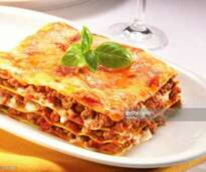

Lasagna

Grandma's Backwoods Lasagna
This is Grandma Lilly's Famous Sunday lasagna. A filling dish quick to put you on the couch.
Ingredients
1 cup ricotta cheese
1/3 cup grated Parmesan cheese
1 egg
1 jar (14 ounces) spaghetti sauce with meat
4 no-cook lasagna noodles
1-1/3 cups shredded part-skim mozzarella cheese, divided
Directions
- In a small bowl, combine the ricotta cheese, Parmesan cheese and egg; set aside.
Spread 1/3 cup sauce in an 8x4-in. loaf pan coated with cooking spray. Top with one noodle. Spread 1/3 cup sauce to edges of noodle.
Top with a third of reserved cheese mixture and 1/3 cup mozzarella cheese. Repeat layers twice. Top with remaining noodle and sauce.
- Cover and bake at 400° for 25 minutes. Uncover; sprinkle with remaining mozzarella cheese;
bake 5-10 minutes longer or until cheese is melted. Let stand for 10 minutes before cutting.